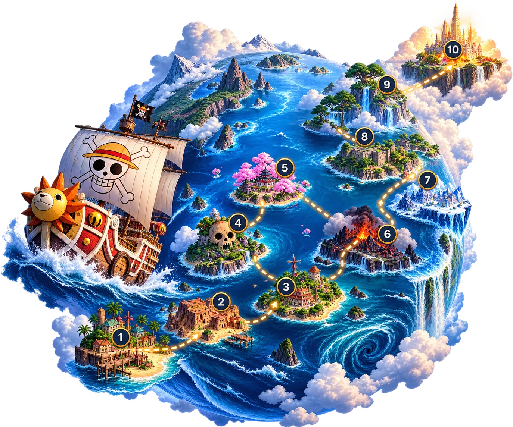

Mundo 02 · Operación One Piece
Mini Pase Pirata
Diez islas, una ruta y un tesoro al final del mapa.
3 nov – 1 dic 2026
- 3,750G-Coins
- 10niveles
- 20misiones
- 1,500 VBUCKS
- Pase de Batalla
Cargando…

Cuatro capítulos
Recompensas
Niveles 2–9 · 1,500 VBUCKSNivel 10 · Pase de Batalla
Misiones
Conseguir el Mini Pase Pirata
Reglas de la temporada
- La XP del pase es solo de temporada (máx. 900) y no cambia tu rango permanente.
- Compra final: no hay reembolsos.
- Al cerrar la temporada ya no se completan misiones; tu historial queda visible.
- Los VBUCKS van a tu billetera GEO ARMY para solicitar regalos; no se depositan directo en Fortnite.
- El Pase de Batalla se entrega a mano y aparece como «pendiente» hasta entonces.